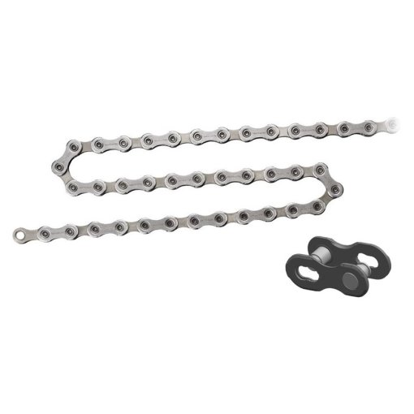

Chain Gang: The evolution of the humble bike chain

The Development of the Bicycle Chain
When it comes to bike development, the 19th century was a real era of progression. In conjunction
with the industrial revolution, bicycles were increasingly becoming an affordable means of
individual transport.
The penny farthings which were customary to begin with didn’t use a chain to transfer power,
rather, the pedals transferred power directly to the front wheel they controlled. This increased
the risk of an accident, in addition to the height and lack of brakes, and meant that cycling
used to be a rather hazardous affair.
This would all change with the development of the safety bicycle. This was the first time a
bicycle had two wheels of the same size, with a front fork which tilted backwards and a saddle
that sat well behind the crankshaft. But this also meant that there needed to be a new way
for power to be transferred for this kind of bicycle, meaning that the development of the
safety bicycle also marked the birth of the chain drive. The power produced by the cyclist
was transferred via a chain ring, cog and chain specially developed for use on bicycles,
as it is today. The bicycle developed back in the 1870s was therefore a prototype for
the bicycles we ride today.
At first, the power produced by the cyclist wasn’t transferred all that effectively due to
large amounts of friction. Resourceful engineers, like the Swiss Hans Renold, started to look
at the problem and identified the bicycle chain as the main area with room for improvement.
In 1880, he submitted a patent application for a roller chain he had developed and as such,
can be classed as the inventor of the modern-day bicycle chain. More innovation followed
in the 20th century with special gear chains for derailleur systems, the basic principle
of which we still use as standard today. Against this backdrop, we’d like to give you
some more detail on what modern bicycle chains look like. Read on to find out more...